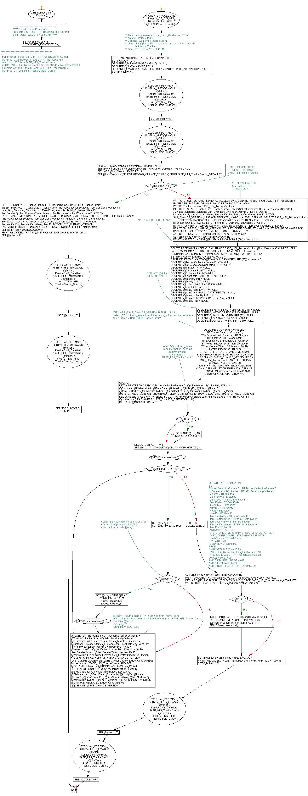

<a href="proc_CT_DIM_HFit_TrackerCardio_Cursor.png"></a>
USE [KenticoCMS_DataMart]; GO /*--------------------------------------------------------------------------------------------------------------------- ***** Object: StoredProcedure [dbo].[proc_CT_DIM_HFit_TrackerCardio_Cursor] Script Date: 12/8/2015 7:29:59 AM ***** */ SET ANSI_NULLS ON; GO SET QUOTED_IDENTIFIER ON; /*----------------------------------------------------------------------------------------------------------------------- drop procedure proc_CT_DIM_HFit_TrackerCardio_Cursor exec proc_QuickRowCount BASE_HFit_TrackerCardio select top 100 * from BASE_HFit_TrackerCardio update BASE_HFit_TrackerCardio set HashCode = 'NA' where ItemID in (Select top 20000 ItemID from BASE_HFit_TrackerCardio) exec proc_CT_DIM_HFit_TrackerCardio_Cursor */ GO CREATE PROCEDURE dbo.proc_CT_DIM_HFit_TrackerCardio_Cursor ( @ReloadAll AS INT = 0) AS BEGIN --********************************************************************* -- ** This code is generated using proc_GenTrackerCTProc. -- ** Author: W.Dale Miller -- ** Contact: wdalemiller@gmail.com -- ** Use: Set @ReloadAll = 1 to delete and reload ALL records -- ** for the this Tracker. -- ** GenDate: Dec 4 2015 8:45PM --********************************************************************* SET TRANSACTION ISOLATION LEVEL SNAPSHOT; SET NOCOUNT ON; DECLARE @Action AS NVARCHAR (10) = NULL; DECLARE @NbrRecs AS BIGINT = 0; DECLARE @RowGuid AS NVARCHAR (100) = CAST (NEWID () AS NVARCHAR (50)) ; SET @Action = 'N'; EXEC proc_PERFMON_PullTime_HIST @RowGuid , @Action , 'KenticoCMS_DataMart' , 'BASE_HFit_TrackerCardio' , @NbrRecs , 'proc_CT_DIM_HFit_TrackerCardio_Cursor'; SET @Action = 'IS'; EXEC proc_PERFMON_PullTime_HIST @RowGuid , @Action , 'KenticoCMS_DataMart' , 'BASE_HFit_TrackerCardio' , @NbrRecs , 'proc_CT_DIM_HFit_TrackerCardio_Cursor'; DECLARE @synchronization_version AS BIGINT = NULL; SET @synchronization_version = CHANGE_TRACKING_CURRENT_VERSION () ; DECLARE @LastVersion AS BIGINT = 0; SET @LastVersion = (SELECT MAX (SYS_CHANGE_VERSION) FROM BASE_HFit_TrackerCardio_CTVerHIST) ; -- PULL AND INSERT ALL RECORDS FROM: BASE_HFit_TrackerCardio IF @ReloadAll = 1 BEGIN DELETE FROM FACT_TrackerData WHERE TrackerName = 'BASE_HFit_TrackerCardio'; INSERT INTO FACT_TrackerData ( TrackerName , TrackerCollectionSourceID , IsProfessionallyCollected , Minutes , Distance , DistanceUnit , EventDate , Intensity , ActivityID , Notes , UserID , ItemCreatedBy , ItemCreatedWhen , ItemModifiedBy , ItemModifiedWhen , ItemID , ACTION , SYS_CHANGE_VERSION , LASTMODIFIEDDATE , HashCode , SVR , DBNAME ) SELECT 'BASE_HFit_TrackerCardio' , TrackerCollectionSourceID , IsProfessionallyCollected , Minutes , Distance , DistanceUnit , EventDate , Intensity , ActivityID , Notes , UserID , ItemCreatedBy , ItemCreatedWhen , ItemModifiedBy , ItemModifiedWhen , ItemID , ACTION , SYS_CHANGE_VERSION , LASTMODIFIEDDATE , HashCode , SVR , DBNAME FROM BASE_HFit_TrackerCardio; SET @NbrRecs = @@ROWCOUNT; PRINT 'RELOADED: ' + CAST (@NbrRecs AS NVARCHAR (50)) + ' records.'; SET @Action = 'IE'; EXEC proc_PERFMON_PullTime_HIST @RowGuid , @Action , 'KenticoCMS_DataMart' , 'BASE_HFit_TrackerCardio' , @NbrRecs , 'proc_CT_DIM_HFit_TrackerCardio_Cursor'; SET @Action = 'T'; EXEC proc_PERFMON_PullTime_HIST @RowGuid , @Action , 'KenticoCMS_DataMart' , 'BASE_HFit_TrackerCardio' , @NbrRecs , 'proc_CT_DIM_HFit_TrackerCardio_Cursor'; SET NOCOUNT OFF; RETURN 1; END; --*************************************************************** -- PULL ALL NEW RECORDS FROM: BASE_HFit_TrackerCardio WITH CTE ( SVR , DBNAME , ItemID) AS ( SELECT SVR , DBNAME , ItemID FROM BASE_HFit_TrackerCardio EXCEPT SELECT SVR , DBNAME , ItemID FROM FACT_TrackerData WHERE TrackerName = 'BASE_HFit_TrackerCardio' ) INSERT INTO FACT_TrackerData ( TrackerName , TrackerCollectionSourceID , IsProfessionallyCollected , Minutes , Distance , DistanceUnit , EventDate , Intensity , ActivityID , Notes , UserID , ItemCreatedBy , ItemCreatedWhen , ItemModifiedBy , ItemModifiedWhen , ItemID , ACTION , SYS_CHANGE_VERSION , LASTMODIFIEDDATE , HashCode , SVR , DBNAME ) SELECT 'BASE_HFit_TrackerCardio' , BT.TrackerCollectionSourceID , BT.IsProfessionallyCollected , BT.Minutes , BT.Distance , BT.DistanceUnit , BT.EventDate , BT.Intensity , BT.ActivityID , BT.Notes , BT.UserID , BT.ItemCreatedBy , BT.ItemCreatedWhen , BT.ItemModifiedBy , BT.ItemModifiedWhen , BT.ItemID , BT.ACTION , BT.SYS_CHANGE_VERSION , BT.LASTMODIFIEDDATE , BT.HashCode , BT.SVR , BT.DBNAME FROM BASE_HFit_TrackerCardio AS BT JOIN CTE ON CTE.SVR = BT.SVR AND CTE.DBNAME = BT.DBNAME AND CTE.ItemID = BT.ItemID; SET @NbrRecs = @NbrRecs + @@ROWCOUNT; PRINT 'INSERTED: ' + CAST (@NbrRecs AS NVARCHAR (50)) + ' records.'; --*************************************************************** -- APPLY ALL DELETES IF ANY DELETE FT FROM CHANGETABLE (CHANGES BASE_HFit_TrackerCardio , @LastVersion) AS C INNER JOIN FACT_TrackerData AS FT ON C.DBNAME = FT.DBNAME AND C.DBNAME = FT.DBNAME AND C.ItemID = FT.ItemID AND C.SYS_CHANGE_OPERATION = 'D'; SET @NbrRecs = @NbrRecs + @@ROWCOUNT; PRINT 'DELETED: ' + CAST (@@ROWCOUNT AS NVARCHAR (50)) + ' records.'; DECLARE @TrackerCollectionSourceID INT = NULL; DECLARE @IsProfessionallyCollected BIT = NULL; DECLARE @Minutes INT = NULL; DECLARE @Distance FLOAT = NULL; DECLARE @DistanceUnit INT = NULL; DECLARE @EventDate DATETIME2 (7) = NULL; DECLARE @Intensity INT = NULL; DECLARE @ActivityID INT = NULL; DECLARE @Notes NVARCHAR (1000) = NULL; DECLARE @UserID INT = NULL; DECLARE @ItemCreatedBy INT = NULL; DECLARE @ItemCreatedWhen DATETIME2 (7) = NULL; DECLARE @ItemModifiedBy INT = NULL; DECLARE @ItemModifiedWhen DATETIME2 (7) = NULL; DECLARE @ItemID INT = NULL; --DECLARE @Action CHAR (1) = NULL; DECLARE @SYS_CHANGE_VERSION BIGINT = NULL; DECLARE @LASTMODIFIEDDATE DATETIME = NULL; DECLARE @HashCode NVARCHAR (75) = NULL; DECLARE @SVR NVARCHAR (100) = NULL; DECLARE @DBNAME NVARCHAR (100) = NULL; --DECLARE @SYS_CHANGE_VERSION BIGINT = NULL; --select ',BT.'+column_name from information_schema.columns where table_name = 'BASE_HFit_TrackerCardio' DECLARE C CURSOR FOR SELECT BT.TrackerCollectionSourceID , BT.IsProfessionallyCollected , BT.Minutes , BT.Distance , BT.DistanceUnit , BT.EventDate , BT.Intensity , BT.ActivityID , BT.Notes , BT.UserID , BT.ItemCreatedBy , BT.ItemCreatedWhen , BT.ItemModifiedBy , BT.ItemModifiedWhen , BT.ItemID , BT.[ACTION] , BT.SYS_CHANGE_VERSION , BT.LASTMODIFIEDDATE , BT.HashCode , BT.SVR , BT.DBNAME , C.SYS_CHANGE_VERSION FROM BASE_HFit_TrackerCardio AS BT INNER JOIN CHANGETABLE (CHANGES BASE_HFit_TrackerCardio , @LastVersion) AS C ON C.DBNAME = BT.DBNAME AND C.DBNAME = BT.DBNAME AND C.ItemID = BT.ItemID AND C.SYS_CHANGE_OPERATION = 'U'; --select ',@'+column_name from information_schema.columns where table_name = 'BASE_HFit_TrackerCardio' OPEN C; FETCH NEXT FROM C INTO @TrackerCollectionSourceID , @IsProfessionallyCollected , @Minutes , @Distance , @DistanceUnit , @EventDate , @Intensity , @ActivityID , @Notes , @UserID , @ItemCreatedBy , @ItemCreatedWhen , @ItemModifiedBy , @ItemModifiedWhen , @ItemID , @Action , @SYS_CHANGE_VERSION , @LASTMODIFIEDDATE , @HashCode , @SVR , @DBNAME , @SYS_CHANGE_VERSION; DECLARE @iChg AS BIGINT = (SELECT COUNT (*) FROM CHANGETABLE (CHANGES BASE_HFit_TrackerCardio , @LastVersion) AS C WHERE C.SYS_CHANGE_OPERATION = 'U') ; DECLARE @MCnt AS FLOAT = 0; IF @iChg > 0 BEGIN DECLARE @msg AS NVARCHAR (2000) = '' END; DECLARE @II AS INT = 0; SET @msg = '1 of ' + CAST (@iChg AS NVARCHAR (50)) ; EXEC PrintImmediate @msg; WHILE @@FETCH_STATUS = 0 BEGIN SET @II = @II + 1; SET @MCnt = @II % 1000; --set @msg = cast(@Mcnt as nvarchar(50)) + ' / ' + cast(@II as nvarchar(50)) ; --exec printimmediate @msg ; IF @MCnt = 0 BEGIN SET @msg = CAST (@II AS NVARCHAR (50)) + ' of ' + CAST (@iChg AS NVARCHAR (50)) ; EXEC PrintImmediate @msg; END; --select ',' + column_name + ' = ' + '@' + column_name from information_schema.columns where table_name = 'BASE_HFit_TrackerCardio' UPDATE Fact_TrackerData SET TrackerCollectionSourceID = @TrackerCollectionSourceID ,IsProfessionallyCollected = @IsProfessionallyCollected ,Minutes = @Minutes ,Distance = @Distance ,DistanceUnit = @DistanceUnit ,EventDate = @EventDate ,Intensity = @Intensity ,ActivityID = @ActivityID ,Notes = @Notes ,UserID = @UserID ,ItemCreatedBy = @ItemCreatedBy ,ItemCreatedWhen = @ItemCreatedWhen ,ItemModifiedBy = @ItemModifiedBy ,ItemModifiedWhen = @ItemModifiedWhen --,ItemID = @ItemID , [Action] = 'U' ,SYS_CHANGE_VERSION = @SYS_CHANGE_VERSION ,LASTMODIFIEDDATE = GETDATE () ,HashCode = @HashCode --,SVR = @SVR --,DBNAME = @DBNAME WHERE TrackerName = 'BASE_HFit_TrackerCardio' AND SVR = @SVR AND DBNAME = @DBNAME AND ItemID = @Itemid; FETCH NEXT FROM C INTO @TrackerCollectionSourceID , @IsProfessionallyCollected , @Minutes , @Distance , @DistanceUnit , @EventDate , @Intensity , @ActivityID , @Notes , @UserID , @ItemCreatedBy , @ItemCreatedWhen , @ItemModifiedBy , @ItemModifiedWhen , @ItemID , @Action , @SYS_CHANGE_VERSION , @LASTMODIFIEDDATE , @HashCode , @SVR , @DBNAME , @SYS_CHANGE_VERSION; END; CLOSE C; DEALLOCATE C; ----*************************************************************** --UPDATE FACT_TrackerData -- SET -- TrackerCollectionSourceID = BT.TrackerCollectionSourceID -- ,IsProfessionallyCollected = BT.IsProfessionallyCollected -- ,Minutes = BT.Minutes -- ,Distance = BT.Distance -- ,DistanceUnit = BT.DistanceUnit -- ,EventDate = BT.EventDate -- ,Intensity = BT.Intensity -- ,ActivityID = BT.ActivityID -- ,Notes = BT.Notes -- ,UserID = BT.UserID -- ,ItemCreatedBy = BT.ItemCreatedBy -- ,ItemCreatedWhen = BT.ItemCreatedWhen -- ,ItemModifiedBy = BT.ItemModifiedBy -- ,ItemModifiedWhen = BT.ItemModifiedWhen -- ,ItemID = BT.ItemID -- ,ACTION = BT.ACTION -- ,SYS_CHANGE_VERSION = BT.SYS_CHANGE_VERSION -- ,LASTMODIFIEDDATE = BT.LASTMODIFIEDDATE -- ,HashCode = BT.HashCode -- ,SVR = BT.SVR -- ,DBNAME = BT.DBNAME -- FROM -- CHANGETABLE (CHANGES BASE_HFit_TrackerCardio, @LastVersion) AS C -- INNER JOIN BASE_HFit_TrackerCardio AS BT -- ON C.SVR = BT.SVR -- AND C.DBNAME = BT.DBNAME -- AND C.ItemID = BT.ItemID -- AND C.SYS_CHANGE_OPERATION = 'U'; SET @NbrRecs = @NbrRecs + @@ROWCOUNT; PRINT 'UPDATED: ' + CAST (@@ROWCOUNT AS NVARCHAR (50)) + ' records.'; --*************************************************************** DECLARE @iCnt AS BIGINT = (SELECT COUNT (*) FROM BASE_HFit_TrackerCardio_CTVerHIST WHERE SYS_CHANGE_VERSION = @synchronization_version) ; IF @iCnt = 0 BEGIN INSERT INTO BASE_HFit_TrackerCardio_CTVerHIST ( SYS_CHANGE_VERSION , DBMS) VALUES ( @synchronization_version , DB_NAME ()) ; PRINT 'Saved version id'; END; SET @NbrRecs = @NbrRecs + @@ROWCOUNT; PRINT 'RELOADED: ' + CAST (@NbrRecs AS NVARCHAR (50)) + ' records.'; SET @Action = 'IE'; EXEC proc_PERFMON_PullTime_HIST @RowGuid , @Action , 'KenticoCMS_DataMart' , 'BASE_HFit_TrackerCardio' , @NbrRecs , 'proc_CT_DIM_HFit_TrackerCardio_Cursor'; SET @Action = 'T'; EXEC proc_PERFMON_PullTime_HIST @RowGuid , @Action , 'KenticoCMS_DataMart' , 'BASE_HFit_TrackerCardio' , @NbrRecs , 'proc_CT_DIM_HFit_TrackerCardio_Cursor'; SET NOCOUNT OFF; END;
Hide code
Visustin flow chart for T-SQL